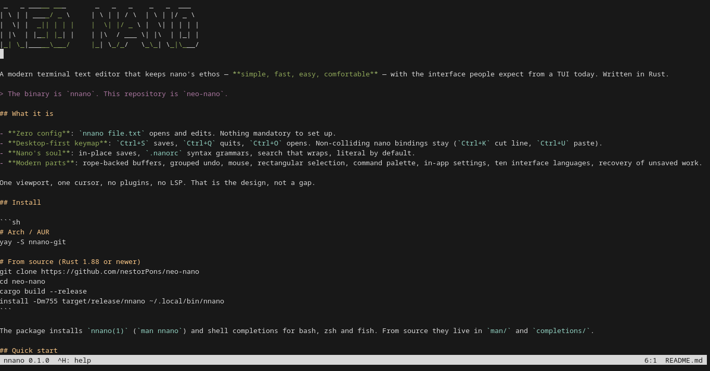

$Cero configuración
nnano archivo.txt abre y edita. No hay ningún archivo obligatorio, y todo se puede ajustar desde la línea de comandos o desde el panel de ajustes.
Un editor de texto para la terminal que conserva el alma de nano — simple, rápido, fácil, cómodo — y añade lo que hoy se espera de un TUI. Escrito en Rust.
v0.1.1 · Rust · MITnnano es una reescritura moderna del editor nano. No es un fork de su código en C: es un proyecto nuevo, en Rust, que mantiene su idea central —abrir un archivo y editarlo sin configurar nada— y le suma lo que un editor de terminal debería tener hoy.
El binario se llama nnano. El repositorio se llama neo-nano. Nunca se instala un alias nn ni se reemplaza a nano: los dos conviven y comparten los grammars .nanorc.

línea:columna/total.nnano archivo.txt abre y edita. No hay ningún archivo obligatorio, y todo se puede ajustar desde la línea de comandos o desde el panel de ajustes.
Ctrl+S guarda, Ctrl+Q sale, Ctrl+O abre. Las teclas de nano que no chocan se conservan: Ctrl+K corta línea, Ctrl+U pega.
Trunca y reescribe el archivo real, luego hace fsync. Sin archivo~ y sin renombrar temporales: los enlaces duros y los inodos se mantienen.
Grammars .nanorc de nano y un juego propio embebido: html/htmx, js/ts/tsx/jx, php/phtml, go, css/scss, json, yaml, toml, sql, markdown, shell, python, rust, c, java y más.
Varios búferes con su barra, pestañas, deshacer y rehacer agrupados, y «reemplazar todo» como un solo paso.
Clic, arrastre, rueda y barra de scroll a la derecha. Selección por líneas con Shift+↑/↓ y selección rectangular con Alt+Z o Alt+arrastrar.
Un búfer con cambios se respalda 2 s después de la última edición y se restaura tras un cuelgue o una sesión SSH cortada.
English, 简体中文, हिन्दी, Español, العربية, Français, বাংলা, Português, Bahasa Indonesia y 日本語, en la interfaz y en la ayuda.
En Arch, el paquete sigue main (también hay uno estable):
# Arch / AUR
yay -S nnano-git
Desde el código fuente, con Rust 1.88 o más nuevo:
git clone https://github.com/nestorPons/neo-nano cd neo-nano cargo build --release install -Dm755 target/release/nnano ~/.local/bin/nnano
El paquete instala nnano(1) (man nnano) y las completions de bash, zsh y fish. Desde el código fuente viven en man/ y completions/.
Mapa de teclas de escritorio por defecto. La referencia completa, con las diferencias respecto a nano y los límites del terminal, está en los atajos.
| Acción | Tecla | Alternativa |
|---|---|---|
| Guardar / guardar como | Ctrl+S / Alt+S | — |
| Abrir / recargar / insertar | Ctrl+O / Ctrl+R / Alt+I | — |
| Salir / cerrar búfer | Ctrl+Q / Ctrl+W | — |
| Deshacer / rehacer | Ctrl+Z / Ctrl+Y | Alt+U / Alt+E |
| Cortar / copiar / pegar | Ctrl+X / Ctrl+C / Ctrl+V | pegar: Ctrl+U |
| Buscar / siguiente | Ctrl+F / F3 | siguiente: Alt+W |
| Seleccionar todo / marcar | Ctrl+A / Alt+A | — |
| Selección por líneas | Shift+↑ / Shift+↓ | — |
| Ir a línea | Ctrl+G | Alt+G |
| Paleta / ajustes / ayuda | Ctrl+P / Alt+, / Ctrl+H | ayuda: F1 |
Referencia en tu idioma: English · Español · 简体中文 · 日本語 · हिन्दी · العربية · Français · বাংলা · Português · Bahasa Indonesia
nnano-core · nnano-tui · nnano